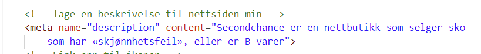
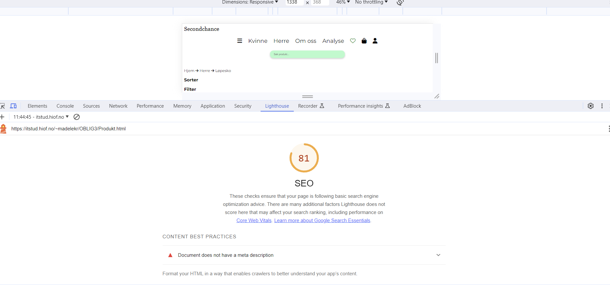
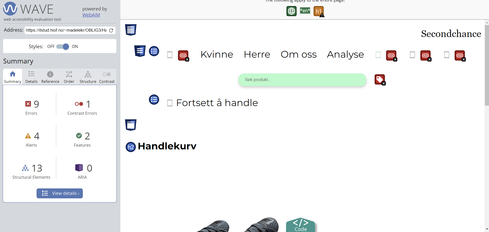

Google Tends
Secondchance er en nettside som selger sko til kvinner og menn. skoene vi selger er rettet mot aktive mennesker hvor man får tak i alt fra sportsko, fjellsko, løpesko, joggesko, tur sko. Ifølge Google Tends er Nike veldig poulært merke å søke på. Ved hjelp av Google tends kan jeg få se hvilken nøkkelord som lønner jeg så ha på min nettside.
Jeg har derfor valgt nøkkelordene: Nike, Puma,
Jeg ser det også er viktig å ha navn på modellen man selger og at man kan skrive dame/ mann/ herre/ kvinne bak navnet på skoene. som for eksempel "Nike Invincible 3 løpesko for vei til herre". da jeg ser dette er en kraftig økning.
Resultater etter å brukt chatgpt, webaim og lighthouse
| ChatGPT resulater forsiden | Lighthouse resulater forsiden | Webaim resultater forsiden |
|---|---|---|
| (SEO)Legg til metatags: Legg til meta description og meta keywords. Disse metatagene hjelper søkemotorer med å forstå og indeksere innholdet ditt bedre. | Document does not have a meta description | 8 Error, 1 X Missing form label |
| (SEO)Legg til alt-tekst på bilder: For hvert bilde, inkluder en beskrivende alt-tekst | Tap targets are not sized appropriately | 7 X Empty link |
| (SEO) Søkeordsstrategi: Identifiser nøkkelord som er relevante for nettstedet ditt, og inkorporer dem i sidens innhold, spesielt i overskrifter og tekst. | Alerts missing first level heading | |
| (UU) Legg til ARIA-attributter: Bruk ARIA-rolle og ARIA-label-attributter for å forbedre tilgjengeligheten til nettstedet ditt | ||
| (UU) Kontroller kontrast: Sjekk tekst- og bakgrunnsfarger for å sikre tilstrekkelig kontrast. Bruk verktøy som WCAG Color Contrast Checker for å evaluere kontrasten. | ||
| (UU) Semantisk HTML: Bruk semantisk HTML for å merke opp innholdet ditt riktig. For eksempel, bruk nav for navigasjonselementer, h1, h2, osv., for overskrifter, og taggen form for skjemaer. | ||
| (UU) Lenker og navigasjon: Merk lenker og navigasjonen klart og beskrivende. Unngå uklare lenketekster som "klikk her." | ||
| (UU) Skjemaer og inndata: Merk skjemafeltene og gi riktig beskrivende tekster. | ||
| (UU)Skjult tekst: Vurder nøye hvilken tekst som blir skjult på mobil. Sørg for at viktig innhold forblir synlig eller at det finnes alternative måter å få tilgang til den informasjonen. | ||
| (UU) Responsiv design: Sørg for at CSS-stilen er responsiv og tilpasser seg forskjellige skjermstørrelser. Test nettstedet ditt på mobile enheter for å sikre at det fungerer bra. |
| ChatGPT resulater produktsiden | Lighthouse resulater produktsiden | Webaim resultater produktsiden |
|---|---|---|
| (SEO) Mangler meta tags som title og meta name="description"> | Document does not have a meta description | 5 Error, 1 X Missing form label |
| (SEO)mangler alternativ tekst på bildene | Tap targets are not sized appropriately | 4 X Empty link |
| (SEO)Feil i koden: Flere steder i koden har du brukt feil i henhold til HTML- og CSS-syntaksen. For eksempel, i "style" -attributtet, bør du bruke dobbelkolon i stedet for enkel kolon: style="color:#0FA958;". | document dosen't use legible font sized | Alerts missing first level heading |
| (UU) Manglende overskrifter: Bruk av overskrifter (f.eks. h1, h2, h3) er viktig for å organisere innholdet og gjøre det lettere å forstå. Det ser ut til at du bruker overskrifter for produkttitler, men du bør også bruke overskrifter for andre viktige deler av innholdet, som "Hjem," "Sorter," og "Filter." | ||
| (UU) Fargekontrast: Fargevalget for ikonene og tekst på nettstedet kan påvirke lesbarheten for personer med visuelle utfordringer. | ||
| (UU) Tilgjengelige linker: Du har linker som kun inneholder ikoner, uten tilhørende tekst. Dette kan være forvirrende for brukere som er avhengige av skjermlesere. Du bør legge til tekst som beskriver formålet med disse linkene. | ||
| (UU) Alternativ tekst for bilder: Som nevnt tidligere, må du legge til alternativ tekst for bildene for å oppfylle universell utforming. Dette vil hjelpe brukere som ikke kan se bildene å forstå innholdet. | ||
| (UU) Skjermleser-kompatibilitet: Selv om koden din inneholder noen ARIA-roller (Accessible Rich Internet Applications), bør du sørge for at hele nettstedet er kompatibelt med skjermlesere og kan navigeres uten problemer. |
| Lighthouse resulater handlekurvsiden | Webaim resultater handlekurvsiden | |
|---|---|---|
| (SEO) Mangler meta tags som title og meta name="description" | Document does not have a meta description | 9 Error, 2 X Missing form label |
| (SEO) Legg til en favicon: Opprett og inkluder en favicon for å forbedre gjenkjennelighet og brukeropplevelse. Favicon-filen bør hete "favicon.ico" og legges til i roten av nettstedet ditt. | links are not crawlable | 7 X Empty link |
| (SEO) Lenketekst for logo: Forbedre brukeropplevelsen ved å legge til tekst til lenken på logoen. Dette hjelper brukere å forstå hva lenken fører til. | document dosen't use legible font sized | 1 Contrast Errors 1 X Very low contrast |
| (SEO) Optimaliser CSS: Sørg for at CSS-filene er optimaliserte for hastighet ved å fjerne unødvendig CSS-kode og minimere filstørrelsen. | ||
| (UU) Sosiale medier-ikonfarger: Brukende farger for sosiale medier-ikoner kan forbedre brukeropplevelsen og skape gjenkjennelse. Sørg for at fargen er tilstrekkelig kontrast for lesbarhet. | ||
| (UU) Test med skjermlesere: Test nettstedet ditt med skjermlesere som VoiceOver (på Mac), NVDA (på Windows), eller JAWS for å sikre at det er godt tilgjengelig for personer med nedsatt syn. | ||
| (UU) Legg til etiketter i skjemaet: Forbedre skjemafeltene ved å inkludere etiketter for hvert inndatafelt. Dette hjelper brukere å forstå hva som forventes i hvert felt. | ||
| (UU) Forbedre fargekontrast: Sørg for tilstrekkelig kontrast mellom tekst og bakgrunn for å oppfylle UU-krav. Du kan bruke online verktøy som Color Contrast Checker for å evaluere kontrasten. | ||
| Test med skjermlesere: Test nettstedet ditt med skjermlesere som VoiceOver (på Mac), NVDA (på Windows), eller JAWS for å sikre at det er godt tilgjengelig for personer med nedsatt syn. |
Analysen på forsiden av nettsiden min for SEO
Her fikk jeg 90 score, for å fjerne varselen skrev jeg en beskrivelse om nettsiden min som denne koden jeg legger bilde av.
Her måtte jeg endre "magrin 1 rem" på min icon ul for at det skulle bli større avstand fra ikonet mitt fra søke feltet. etter å ha gjort disse endringene fikk jeg 100 score på både mobilversjonen og desktop.
ANalyse på produktsiden min for SEO
Det startet med en ikke så god score. Jeg fikk 81 SEO, det jeg måtte endre på var også å lage en beskrivelse som jeg har viser ovenfor. Jeg måtte også sette inn margin 1 rem på css for at det skulle bli større avstand fra søkefeltet mitt til analyse overskriften. Deretter tok jeg tekst typen på mobil større, jeg hadde 10 px og endret dette til 12 px.
etter å ha endret dette fikk jeg 100 SEO, både på mobil og desktop.
Analyse av SEO av handlekurv
her fikk jeg 83 SEO, samme som sist har jeg måtte endret beskrivelse på nettsiden min. jeg måtte også endre slik at det ble linket opp, på kvinne og om oss.
UU endriger
jeg begynte gjøre endringer for UU på handlekurv siden min først, grunnen til dette er fordi jeg hadde flest error på på denne siden. Her har jeg screenshotet handlekurv siden min øverst og nederst.
Jeg startet først med å endre fargen slik at kontraten ikke skulle bli så liten, da gikk jeg inn i css arket mitt og byttet fargekoden fra grå til svart. Etter å ha gjort denne endringen gikk contrast erroren bort.
Etter dette endret jeg errorene som jeg fikk på alle ikonene mine, som var tilsammen 8 stykk. Jeg fikk varsel om at ikonene mine manglet en beskrivelse. For å legge til en beskrivelse av ikonene mine skrev jeg inn title inne i a taggen min og skrev et navn som passet.